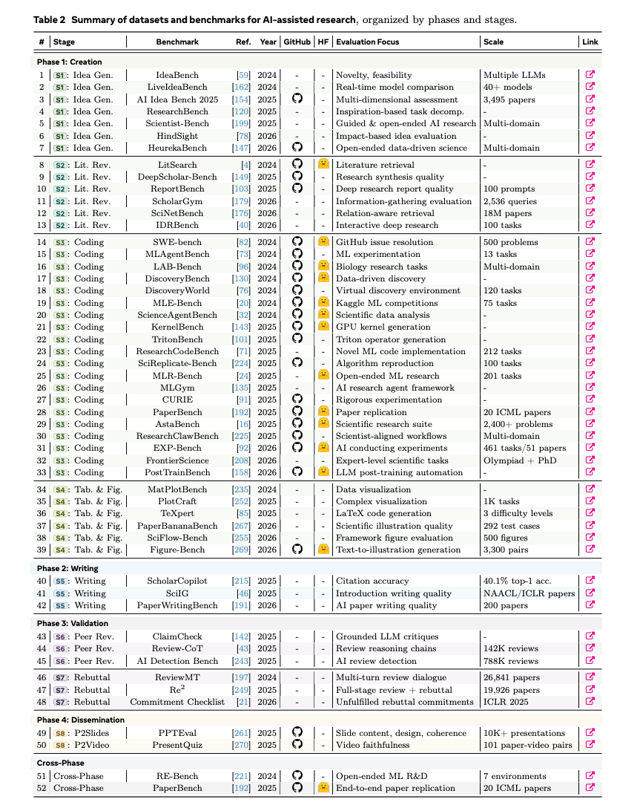
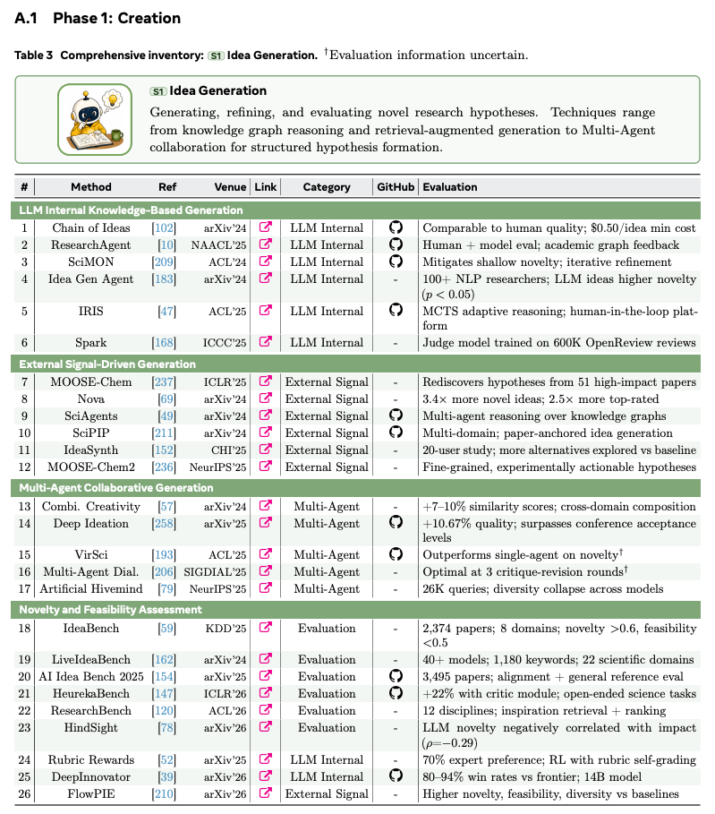
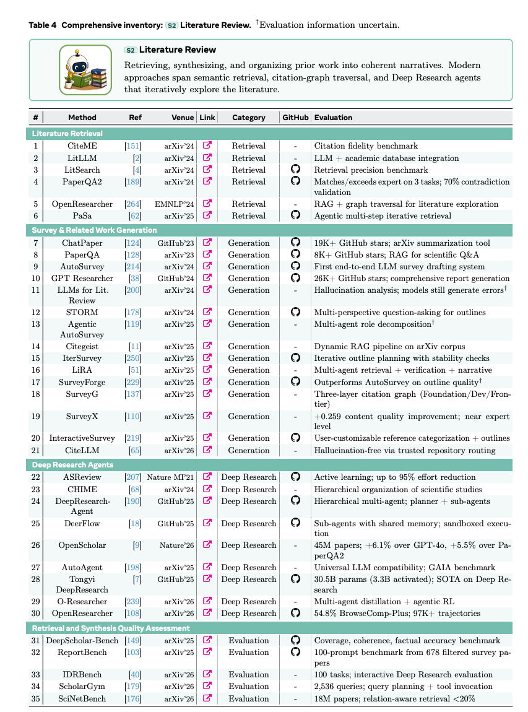
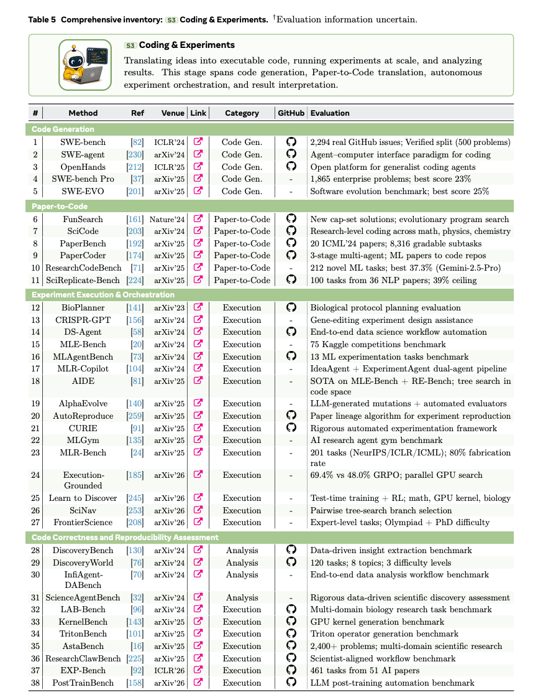
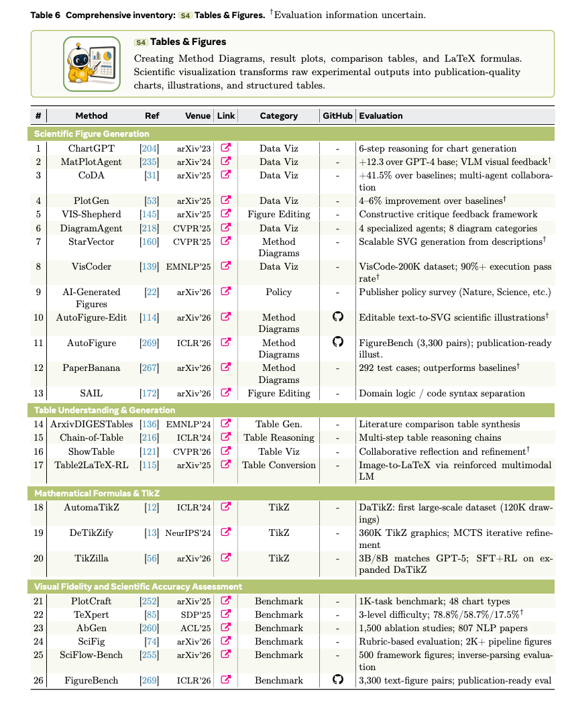
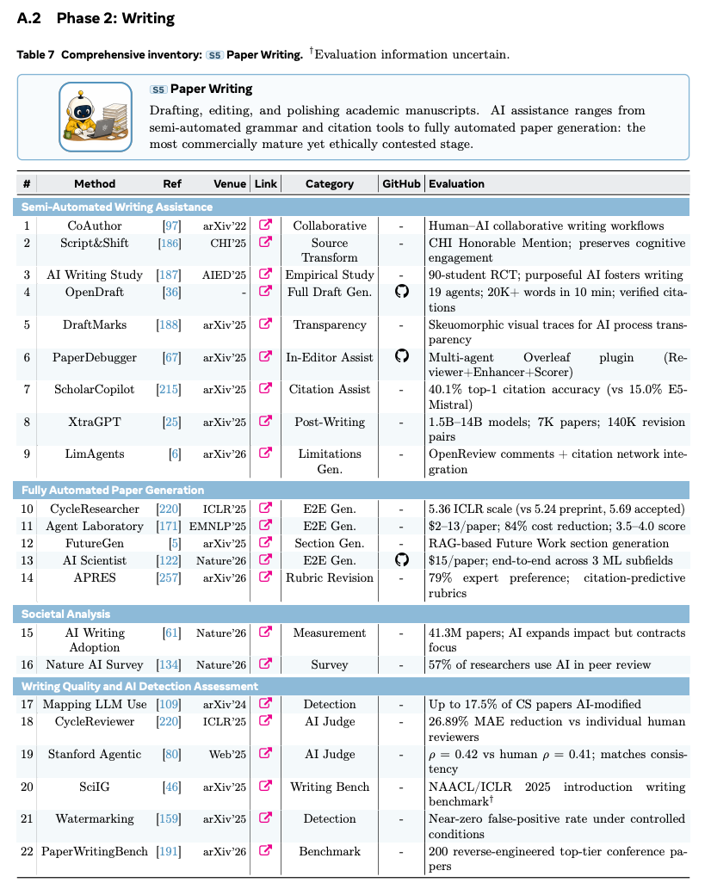
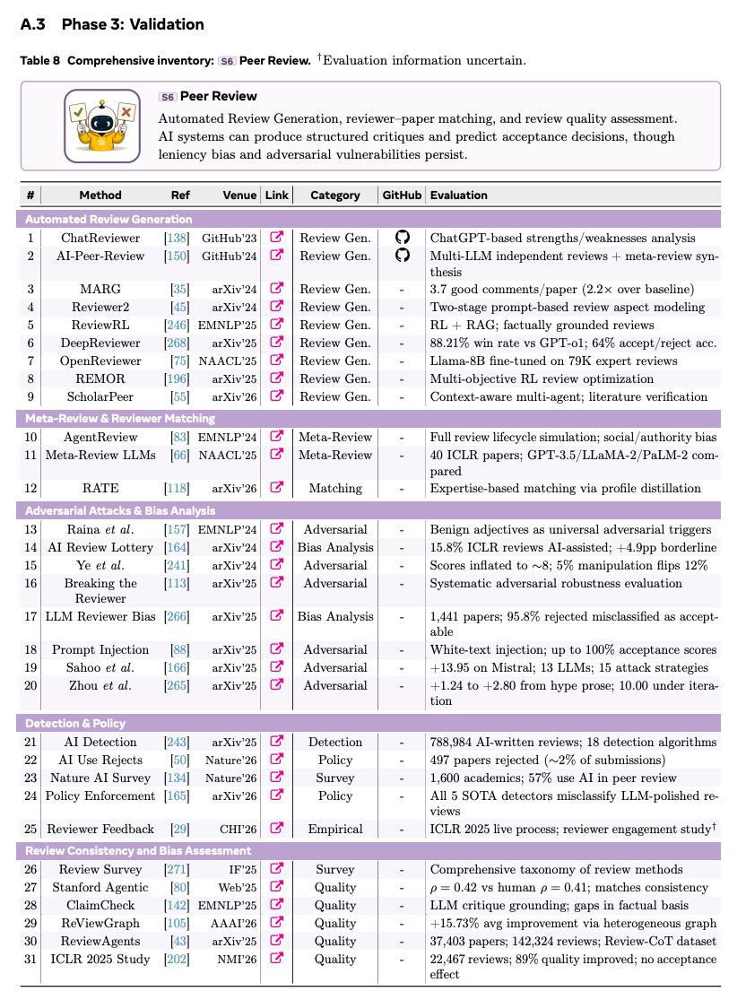
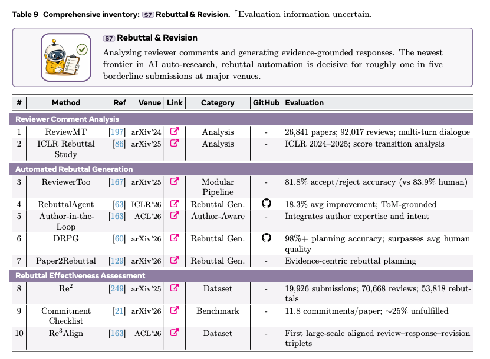
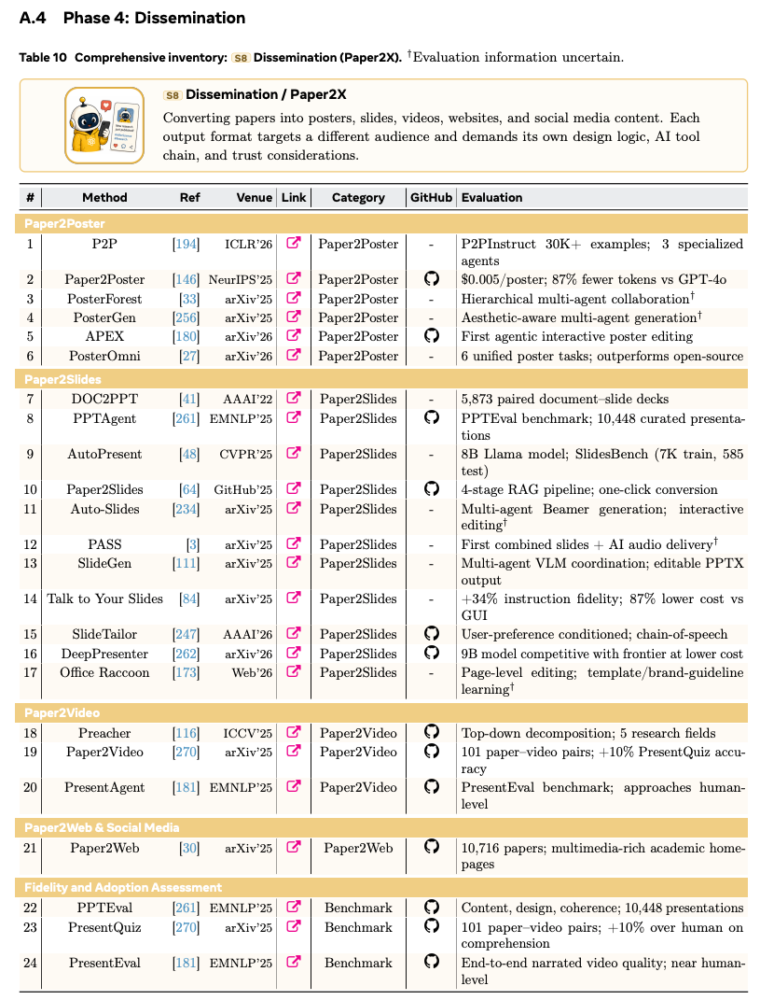

AI 能自己写论文了，但它真的"懂"科研吗？——一篇 AI 自动科研全景综述的解读

写在前面
最近这一年，AI 做科研这件事明显跨过了一道坎。
笔者印象最深的几个数字是这样的：有个叫 The AI Scientist 的系统，生成一篇完整的研究论文，成本压到了大约 15 美元；另一个叫 FARS 的系统更夸张，连续跑了 228 个小时，烧掉 114 亿 token，一口气产出 100 篇论文，平均每 2.3 小时就吐一篇；还有个 ARIS，号称能跑通一个"通宵工作流"——晚上挂机跑 20 多个 GPU 实验，自动剪掉那些没有证据支撑的结论，再通过反复自审自改，把一篇草稿的评审分从 5.0 拉到 7.5。
这些系统传递出一个很清晰的信号：AI 已经不只是帮你润色一段话、补一段代码那么简单了，它开始尝试去编排整条科研流水线——从想点子、查文献、跑实验，到写稿、模拟同行评审、准备宣传材料，一条龙。
但热闹归热闹，这篇综述真正想戳破的，是一个更深层的问题：AI 越来越会"生产"科研产物，却远没有学会"判断"这些产物到底靠不靠谱。 看着新颖的点子，一落地实现就蔫了；能跑起来的代码，实现的可能压根是另一个算法；行文流畅的论文，底下藏着站不住脚的结论；自动写的评审意见，读着头头是道，实际上既宽松又容易被人钻空子。
“论文链接：https://huggingface.co/papers/2605.18661
下面笔者就顺着这篇综述的框架，先讲清楚它的研究背景和动机，再把它梳理的相关工作一段段拆开说。

“上图是全文的总纲：作者把 AI 在科研中的辅助工作切成四个阶段、八个环节。第一阶段「创造」包含想点子、文献综述、写代码做实验、画图做表；第二阶段「写作」聚焦论文撰写；第三阶段「验证」涵盖同行评审和反驳修改；第四阶段「传播」则是把论文转成海报、幻灯片、视频、社媒内容、项目主页，乃至可交互的论文智能体。
一、研究背景：为什么要从"生命周期"的角度看这件事
任务定义
先把这篇综述要谈的事说清楚。它关注的不是某个孤立的工具，而是 AI 在整个学术科研生命周期里的角色。作者把这条生命周期定义成八个互相咬合的环节，再归并成四个大阶段：
第一阶段是创造（Creation），也就是一个研究贡献被实际造出来的过程，包含提出假设、收集证据、做实验、做科学可视化。具体拆成四个环节：想点子（S1）、文献综述（S2）、写代码与做实验（S3）、做图表（S4）。
第二阶段是写作（Writing），把创造阶段攒下来的东西组织成一份正式的学术稿件，准备接受外部审视。这里只有一个环节：论文撰写（S5）。作者特意把写作单独拎出来当一个阶段，理由是——写论文绝不只是排版那么简单，它是一个"修辞 + 证据"的组织过程，需要的 AI 能力跟写代码、做实验完全不是一回事。
第三阶段是验证（Validation），研究社区在这里挑刺、批判、反复打磨稿件，对应同行评审（S6）和反驳与修改（S7）。把这两个环节合并成一个阶段，是因为它们共同构成了"主张被质疑、被辩护、被修订"的社区机制。
第四阶段是传播（Dissemination），把稿件和配套材料转化成更广人群能接触的形态：海报、幻灯片、视频、社媒、项目页、可交互智能体（统称 Paper2X，S8）。作者强调传播也配得上一个独立阶段，因为这些东西本身就是有自己保真度和信任要求的知识产物，不是论文的简单衍生品。
值得注意的是，虽然这八个环节是按时间顺序排的，但整条生命周期并不是一条直线。第三阶段评审提的意见，可能逼着你回到第一阶段补实验；第四阶段做传播时，又可能暴露出第二阶段写作里的歧义或错误，触发返工。这些反馈回路是科研实践的核心，对 AI 辅助流程尤其关键——因为一旦不显式检查，错误会顺着环节一路往下传。
研究背景与动机
为什么非要用"生命周期"这个视角？作者的论证笔者觉得挺有说服力。
科研本来就不是一堆互相独立的任务的堆叠：点子变成实验，实验变成主张，主张变成稿件，评审变成修订，论文变成面向公众的总结。早期引入的错误会在下游被不断放大，尤其是当 AI 系统在不保留证据和出处的情况下，源源不断生成"看起来很合理"的输出时。
问题在于，尽管研究智能体、写作助手、科学编程工具、自动审稿机、反驳系统、各种 Paper2X 应用层出不穷，整个领域却一直缺少一个贯穿完整学术生命周期的统一分析。没有这样的全局视角，你很难讲清楚：AI 到底在哪些环节真能帮上忙，在哪些环节会系统性翻车，以及哪种部署方式在科学上才站得住脚。
这就是这篇综述的核心动机。它截止到 2026 年 4 月，号称是第一篇端到端覆盖完整学术科研生命周期的 AI 分析。
五个核心发现
通读全文，作者反复在强调五个判断，笔者认为这是整篇综述的骨架：
第一，AI 的能力，在任务结构化、有据可依、外部可校验时最强，但一旦遇到需要真正的新颖性、隐性领域知识、长程推理或科学判断的开放式任务，能力断崖式下跌。
第二，生产持续跑在验证前面。在每一个环节，AI 产出"看起来合理"的东西的速度，都远快于它证明这东西正确、忠实、有意义的速度。
第三，最可靠的部署方式是"人来掌舵"的协作，而不是完全自动化。AI 可以减少检索、起草、编码、可视化、评审支持、传播这些环节里的机械摩擦，但判断、解释、实验设计、论证和问责必须留在研究者手里。
第四，有效的系统越来越依赖分层架构——把探索、工具执行、验证组合起来。这说明编排、出处追踪、反馈设计，跟模型规模一样重要，甚至更重要。
第五，AI 在科研中的使用已经变成一个治理问题，而不是一个检测问题。当 AI 辅助变成家常便饭，真正要紧的问题是披露、归属、责任，以及科学诚信到底有没有被守住。
三点贡献
这篇综述给自己定的三个贡献是：
其一，提供一个横跨四阶段八环节的统一分类法，既覆盖写作、编码这些成熟领域，也覆盖反驳、科学可视化、研究传播这些被严重低估的领域。
其二，把整条生命周期上的工具、基准、方法族系统梳理了一遍，展示这些系统是怎么从"基于提示词的辅助"一步步演化到检索增强、智能体化、微调、混合工作流的。
其三，识别出一系列横切的能力边界和开放挑战，包括阶段交接处的忠实性、科学判断、可复现性、引用出处、治理、跨领域泛化、认知所有权等等。
二、相关工作（上）：方法族与文献梳理方式
在进入具体环节之前，作者先把整个领域常用的方法套路归了归类，这部分对理解后面的相关工作很有用。 
五大方法族
作者总结，整条生命周期上的 AI 辅助系统，反复复用的其实就是一小撮方法模式，归成五个大族：
提示工程（Prompt Engineering） 是把通用大模型适配到科研任务最简单的接口，包括直接提示、思维链、角色分配、结构化模板、基于评分标准的指令、输出约束等等。因为不用额外训练，它在头脑风暴、编辑、评审初稿、反驳提纲、社媒生成这些轻量任务上用得很广，但缺点也明显——对提示措辞极其敏感，而且通常缺少持久的事实依托。
检索增强生成（RAG） 把模型输出锚定在外部来源上：论文库、引文图、代码仓库、基准记录、实验日志。它对文献综述、引用支持、证据核查、反驳生成这些需要来源归属的环节尤其重要。RAG 通过在推理时把证据喂给模型来减少幻觉，但它并不能保证选出来的来源是正确的、版本一致的、被忠实呈现的。
免训练的智能体方法（Training-free Agentic） 给大模型加上规划、工具调用、记忆、自我反思、迭代执行，让它在不更新参数的情况下跑多步工作流。深度文献探索、代码调试、实验编排、评审回应规划、Paper2X 工作流，都靠它。它的强项在编排，主要风险是——一旦检索、工具调用或自我批判出问题，错误会传播。
基于训练的方法（Training-based） 针对环节特定的数据分布去专门化模型，比如同行评审、科学稿件、代码仓库、引用语境、反驳轨迹。它在一致性、格式遵循、领域术语、任务特定判断上能有提升，但高度依赖数据质量，还可能过拟合到狭窄的基准或会议分布上。
混合方法（Hybrid） 把上面几族组合成一体化系统，比如把 RAG 跟智能体规划耦合，对领域子模块做微调，或者在大工作流里塞一个基于提示词的控制器。混合系统现在越来越占主导，因为科研工作流既要生成又要依托证据，既要自主又要验证，既要灵活推理又要环节特定的专门化。
文献是怎么收集的
作者用了三条互补的策略来构建语料：一是在 Google Scholar、Semantic Scholar、arXiv、DBLP 上做系统性关键词检索；二是从每个环节的代表性种子论文做滚雪球式引文追溯，既往前追到奠基工作，也往后追到最新系统和基准；三是监控社区和代码仓库，包括开源项目、精选阅读清单、基准排行榜，把那些还没被正式发表收录的新兴工具捞进来。
一篇论文要被收录，必须同时满足三个条件：瞄准生命周期里至少一个环节；可以通过公开渠道访问；提供了足够的方法或评测细节支撑批判性分析。
一个值得一提的现象是，收集到的语料分布很不均衡。绝大多数已记录的系统集中在第一阶段「创造」，尤其是文献综述、编码和实验自动化，然后才是写作、验证、传播。这种失衡既反映了研究成熟度，也反映了发表可得性——创造阶段的工具更常被做成基准、被开源，而传播类工具往往是商业的、流程特定的，评测标准也不够标准化。
发展时间线
简单说一下这个领域的演进脉络。2024 年以前，大多数系统瞄准的是孤立任务：文献检索、科学问答、代码生成、领域特定的实验规划。早期的 Coscientist 展示了大模型智能体能在受限实验室环境里规划并执行科学工作流，而 AlphaFold 3 这类领域基础模型则展示了 AI 改造专业科学发现的更大潜力。
2024 年，领域开始从孤立工具走向端到端研究智能体。The AI Scientist 提供了一个早期范例——一条覆盖想点子、跑实验、写论文、评审式打分的自动流水线。
到 2025 年和 2026 年初，领域进入快速专门化和基准化阶段。几乎每个环节都冒出了专用系统：文献综合、论文转代码、自主实验编排、稿件撰写、同行评审、反驳支持、图表生成、研究传播。OpenScholar 推进了检索增强的科学综合并登上了 Nature，AI Scientist v2 探索了更强的端到端自动科研，FARS 展示了大规模自主论文生成。一些此前被冷落的环节也开始被重视，比如反驳写作和科学可视化。
作者的结论是：这个领域现在的瓶颈，已经不只是模型能力本身，而是编排、评测、可靠性和治理。
三、相关工作（下）：八个环节逐一拆解
下面进入这篇综述最核心的部分——把四个阶段、八个环节里的代表性工作梳理一遍。
阶段一·创造

创造阶段目前工具生态最丰富、基准覆盖最广，但成熟度并不均匀。想点子的工具一大堆，却深受"构思—执行落差"之苦；文献综述靠检索增强和智能体综合在飞速进步，但引用保真、覆盖完整性、多论文关系推理仍然难；编码实验从代码生成、论文转代码、自主实验编排一路推进，但在真正新颖的研究代码上性能依旧暴跌；图表生成相对最不发达。
S1 想点子
想点子是整条生命周期的入口。这个环节最核心的矛盾是：大模型能产出看着新颖、动机充分的点子，却往往造不出在执行之后仍然可行、有区分度、有影响力的点子。 
技术路线大致分三种。第一种是基于大模型内部知识的直接生成。Si 等人做过一个很有影响力的研究，找了 100 多位 NLP 研究者做大规模人评，发现大模型生成的点子在新颖性上显著高于人类（p < 0.05）。这个结果展示了大模型表层的生成能力，但也立刻抛出了本环节的核心拷问——表面的新颖，是否对应着可执行、有影响力的研究？后续工作沿三条路加强直接生成：用反馈回路做迭代精炼（ResearchAgent、SciMON、Chain of Ideas），引入学习到的质量信号（Spark 用 60 万条 OpenReview 评审训了一个评判模型，DeepInnovator 训了个 14B 模型在构思任务上对前沿模型报出 80%–94% 胜率），以及把推理算力当成可控资源在测试时动态分配（IRIS、FlowPIE）。
第二种是外部信号驱动的生成，从关系结构、文本证据、时间机会三个角度给点子接地。知识图谱提供关系结构（SciAgents、MOOSE-Chem，后者从 51 篇高影响力论文里重新发现了假设）；论文检索把点子锚定在非结构化文献里（SciPIP、IdeaSynth）；趋势分析瞄准研究机会的时间维度（Nova）。
第三种是多智能体协作生成，通过模拟科研社区的角色分工、批判、修订、辩论来提升点子质量。VirSci 构建了一个虚拟科学社区，报出比单智能体基线更高的新颖性（5.24 对 4.94）。但多智能体扩展并非总是有益——有研究发现三轮批判修订往往就够了，再多收益递减。更深层的隐忧来自"人工蜂巢思维"研究：大模型生成的点子倾向于聚集在点子空间的狭窄区域，多样性坍缩可能是当前模型的结构性属性，靠堆智能体解决不了。
评估方面，IdeaBench、LiveIdeaBench、ResearchBench、AI Idea Bench 2025 等基准从不同维度量化。一个反复出现的模式是：表面新颖性和实际可行性之间有鸿沟——IdeaBench 报告很多大模型新颖性能上 0.6，可行性却低于 0.5。HindSight 用时间切分、基于影响力的评估进一步指出，"大模型当评委"会高估那些听着新颖、但日后并未真正产生影响力的点子（新颖性判断与后续真实影响力负相关，ρ = −0.29）。
S2 文献综述
相比想点子，文献综述更接地气、更可外部验证，是 AI 辅助科研里成熟最快的领域之一。但两个限制始终存在：系统能越来越好地检索和总结单篇论文，却在忠实引用、覆盖完整性、多论文关系推理上仍然吃力。 
检索是一切下游综合的基础，分三种模式。语义检索是基线（LitLLM、PaperQA2）；引文图增强检索加入结构信号（OpenResearcher 把 RAG 和图遍历结合）；智能体多步检索把检索从一次性排序变成迭代搜索过程（PaSa 部署一个会发追问、不断精炼候选集的智能体，逼近人类研究者探索陌生主题的方式）。
综合环节把检索到的论文转成结构化叙述。单趟系统证明了自动综述起草的可行性（AutoSurvey、SurveyX）；结构感知系统把提纲规划从排版步骤提升为核心综合产物（STORM 引入多视角提问构建大纲，SurveyForge 从人写综述里学大纲启发式）；多智能体分解把检索、验证、组织、叙述写作拆成专门子任务（LiRA、Agentic AutoSurvey、IterSurvey）；引用与编辑器感知系统则把综合和写作环境打通（SurveyG 构建三层引文图，CiteLLM 把无幻觉的参考发现直接嵌进 LaTeX 编辑器）。不过引用保真依然是瓶颈——ScholarCopilot 报告 top-1 引用准确率只有 40.1%，说明生成像模像样的相关工作文本，仍然比把每个主张接到正确来源容易得多。
深度研究智能体把文献探索当成一个迭代的智能体过程：给个开放问题，它规划子查询、检索阅读来源、更新内部状态，直到能以足够置信度综合出报告。商业系统把这范式普及开了（OpenAI、Google、Perplexity、Elicit），开源的文献专用系统则把它适配到科学场景（登上 Nature 的 OpenScholar 在科学文献基准上超过 PaperQA2 和 Perplexity Pro；阿里的 Tongyi DeepResearch 专精长程深度信息检索）。这些系统跨度很大，从轻量事实查找到长程自主综合，但都越来越收敛到同一个迭代架构：规划 → 检索 → 阅读 → 更新 → 综合。

值得注意的一个趋势是：幻觉已经从"明显捏造"转向了"微妙的错误接地"——生成的主张可能看着引用齐全，实际上并没有被忠实支撑。另外，几乎所有基准和系统都瞄准 ML/NLP 文献，化学、生物、物理的跨领域综合基本还没被测过。
S3 编码与实验
这个环节要把研究想法翻译成可执行实现、跑实验、分析证据。相比文献综述，它要求 AI 系统跟外部环境打交道：仓库、依赖、数据集、算力、测试套件、评测脚本。核心挑战不是大模型能不能写出像样的代码，而是能不能产出语义正确的研究实现、跑出有意义的实验、可靠地解读结果。 
通用代码生成已经是当前大模型最成熟的能力之一——在评测真实 GitHub issue 解决的 SWE-bench Verified 上，前沿系统现在已经超过 76%。但在标准软件基准上的高分，并不直接意味着研究编码也准备好了。更难的变体立刻暴露出局限：SWE-bench Pro 上掉到 23%，SWE-EVO 上掉到 25%。
论文转代码是研究特有的代码生成，比常规软件工程更难，因为论文常常混着自然语言描述、公式、伪代码、消融细节、领域惯例，还把关键实现选择留作隐含。专门的基准把这个设定有多难量化得很清楚：ResearchCodeBench 在 212 个新颖 ML 实现任务上，最强模型只有 37.3% 准确率，而且 58.6% 的错误是语义错误——代码能跑，实现的却是错的算法或行为；SciReplicate-Bench 报出 39% 的类似天花板。这种"在熟悉软件基准上表现强劲、在新颖研究代码上性能低得多"的反差，定义了这个环节的"能力悬崖"。
实验执行与编排方面，MLAgentBench、MLR-Copilot、DS-Agent、AIDE 等系统提供规划、改代码、起任务、监控、迭代失败的基础设施。最近的系统把它推向更高吞吐和闭环（R&D-Agent 的研究员-开发者双智能体设计，Karpathy 的 autoresearch 演示了高吞吐实验迭代，闭环系统如 CodeScientist、Dolphin、NovelSeek 试图把假设生成、实现、执行、验证连起来）。还有一条线把执行和搜索、学习信号耦合（AlphaEvolve 通过大模型生成的变异加自动评测改进算法，FunSearch 在演化搜索循环里让大模型生成的程序贡献了真正的数学发现）。
笔者觉得作者这里有句话点得很到位：编码实验暴露出和想点子一样的更大模式——执行能力的提升速度，快过了"决定该执行什么"所需要的科学判断。当前系统在规定好的任务池上表现不错，但要它去选真正新颖的研究方向时就不那么可靠了。还有两个扎心的数字：完全自主的结果里有 80% 是捏造的，而下游评审只能抓住一半的方法学问题，形成一个不断累积的验证赤字。
S4 图表
图表把实验输出、统计摘要、算法、概念设计转成可发表的研究产物。相比编码实验，这个环节更多是"忠实地呈现证据"而非产生新证据。核心挑战是"视觉上像模像样"和"科学上正确"之间的落差——AI 生成的东西可能看着很专业，却带着错误标签、误导性布局、无效的数值关系或领域记号错误。 
科学图表生成上，方法图和框架图比标准结果图难得多，因为前者需要忠实的空间组织、正确的信息流、领域专属符号。AutoFigure-Edit 从长文本生成可编辑的文本转 SVG 科学插图，PaperBanana 用多个专门智能体做检索、规划、风格化、可视化、批判。结果图和数据可视化相对可控，因为能锚定在结构化数据和可执行绘图代码上（MatPlotAgent 用视觉反馈改进质量，ChartGPT 把图表生成拆成顺序推理步骤）。
表格生成比图表更不成熟，因为科学表格要满足更严格的语义约束——对比表要轴一致、方法分组公平、引用覆盖完整、数值转录正确，消融表更要命，因为它编码的是实验设计选择。AbGen 评估大模型设计消融研究的能力，发现大模型生成的表格规划和人类专家判断之间有显著差距。数学公式、TikZ 图、算法伪代码对小错误特别敏感，一个错位的符号、下标、箭头就能改变方法含义，所以它们的鲁棒性比自然语言润色或标准可视化都差。TeXpert 揭示了这点：随着 LaTeX 任务变复杂，准确率从 78.8% 一路掉到 15%。
阶段二·写作

写作之所以单独成一个阶段，是因为它要把第一阶段的产物组织成一个学术论证。它不是排版步骤：稿件得选证据、搭主张结构、把贡献放进文献语境、把方法讲清楚到能复现、在外部审视前预判反对意见。
AI 辅助写作已经从偶尔帮忙变成了主流科研实践。大规模语料分析估计，多达 17.5% 的计算机科学论文摘要、13.5% 的生物医学摘要可检测到 AI 修改痕迹；自报采用率更高——2025 年《自然》一项调查发现超过一半研究者会寻求 AI 写作帮助。 
半自动写作辅助覆盖从规划、起草到润色、修订的各个部分。主导范式正在从"AI 替你写"转向"AI 陪你写"——AI 处理机械或局部操作（润色、引用格式、初稿），研究者保留对新颖性、论证、实验解读、科学判断的责任。编辑器集成系统让这种协作更显式（PaperDebugger 把多智能体系统嵌进 Overleaf）；另一条线强调认知投入和透明度（Script&Shift 围绕"来源转换"而非直接生成文本来组织写作，DraftMarks 给修订强度和 AI 生成内容提供可视化痕迹）。
完全自动论文生成则想越过局部辅助走向端到端稿件生产。端到端研究系统（The AI Scientist、Agent Laboratory）证明了产出完整论文式产物的可行性，但输出常受限于论证浅、实验弱、新颖性不足。基准化的论文生成系统试图逼近人类评审标准——CycleResearcher 报告生成论文在 ICLR 量表上得 5.36，逼近但仍低于被接收论文的均值 5.69。这个差距很重要，它说明主要瓶颈不再是表面流畅度，而是论证深度、实验严谨度和对评审的预判。

笔者觉得这一节最精辟的一句话是：AI 写作的核心失败模式不是语法不通，而是"无支撑的说服力"——文本流畅、结构良好、看着有引用，却没扎根在证据或科学判断里。检测工具的高误报率（尤其对正式、非母语或重度编辑过的学术文风）正逼着主流会议从"检测"转向"声明"政策。
阶段三·验证

验证阶段的特殊之处在于它引入了对抗性评估——评审者被期望去揪出无支撑的主张、方法学缺陷、缺失的对比、不清晰的写作、不足的新颖性。这让第三阶段成为 AI 辅助的高风险地带。
S6 同行评审
自动评审生成大致分四族：微调评审模型（DeepReviewer-14B、在 7.9 万条专家评审上微调 Llama-8B 的 OpenReviewer）；多智能体评审系统把评审拆成专门角色（MARG、ScholarPeer）；RL 优化评审系统用更显式的训练信号（REMOR、ReviewRL）；提示词系统提供轻量替代（Reviewer2、ChatReviewer）。整体看，自动评审生成越来越结构化，但"评审式文本"不该被误认为"可靠验证"——核心难点是批评是否准确、校准、扎根于稿件和相关文献。 

评估这块作者讲得很细，笔者挑几个关键点。一致性上有进展——斯坦福 Agentic Reviewer 的 Spearman 相关达到 0.42，跟人类之间的 0.41 相当。但一致并不够：评审者可以一边一致、一边系统性地宽松、有偏、肤浅。研究显示大模型评审者会给出比人类高的虚高分（AI 给 6.86，人类给 5.70），把 95.8% 的被拒论文误判为可接受。更可靠的部署方式是用大模型去改进人类评审而非替代——ICLR 2025 一项涵盖 22,467 条评审的随机研究显示，大模型对评审的反馈在 89% 的情况下提升了评审质量，评审者有 26.6% 的时候更新了评审，且不影响接收率。
对抗操纵让部署更复杂。简单的提示注入（白底白字）就能操纵大模型评审；隐蔽内容注入能大幅抬高评审分，操纵一小部分评审就能改变排名；连良性形容词都能当对抗触发器。而基于检测的政策执行也很脆弱——有研究在 788,984 条 AI 写的评审上评估了 18 种检测算法，凸显在单条评审层面识别 AI 生成文本之难。一句话总结：普及已经跑在治理前面。
S7 反驳与修改
这是发表流程里唯一一个作者直接跟评审者的反对意见交锋的环节，所以在认识论上很重要。核心挑战不只是生成有说服力的回应，而是确保反驳有证据支撑、忠实于稿件，并且后面真的去改了。 
评审意见分析把批评拆成可操作的关切（缺实验、动机不清、基线不足等）。ReviewMT 把同行评审建模成多轮长上下文对话，覆盖 26,841 篇论文；Re² 提供了一个一致性保证的全流程评审加多轮反驳数据集。实证研究显示反驳确实能实质影响结果，尤其对边缘论文——ICLR 2024–2025 分析报告 75%–81% 的分数在反驳后不变，17%–23% 提升，只有约 1% 下降，最常见的跃迁是从 5 到 6（从边缘到可接受）。
自动反驳生成从把反驳当直接文本生成（容易幻觉、漏点、不可验证），转向分解成关切提取、证据检索、回应规划、最终生成。RebuttalAgent 用心智理论建模打造有策略说服力的回应，报出平均 18.3% 的提升；Paper2Rebuttal 引入以证据为中心的规划；DRPG 提出"分解-检索-规划-生成"四步流水线，用 8B 模型报出 98%+ 的规划准确率。
笔者认为这一节最有价值的是关于"问责"的讨论。一项审计发现，ICLR 2025 的作者在反驳期间平均每篇论文做出 11.8 个承诺，但大约 25% 的承诺在最终版里没有兑现，缺失的实验是最常见的食言。这暴露了贯穿全文的"能力 vs 诚信"张力：AI 也许能生成可信、有说服力的回应，但反驳的科学有效性取决于它的主张有没有被支撑、它的承诺后面有没有被实现。还有一个目前没自动化的大缺口——很多评审要求需要新实验，而当前反驳系统普遍没法真的去生成新的实验证据，"反驳 → 回到编码做实验"这个回路基本是断的。
阶段四·传播

传播之所以配得上一个独立阶段，是因为它的输出是独立的知识产物，不是论文的简单衍生品：海报要把贡献压成一个视觉叙事，幻灯片要支撑口头讲解，视频要同步视觉/文字/语音，社媒帖要在可达性和精确性之间平衡，可交互智能体要把论文方法暴露出来供下游使用。核心挑战不是 AI 能不能给论文换个格式，而是它能不能在适配新模态、新受众、新交互层级的同时保持科学保真。 
论文转海报：早期系统确立了智能体化海报生成的可行性（Paper2Poster 引入二叉树布局规划和"画家-评论员"反馈回路），后续系统加入更强的设计与层级感知（PosterGen 美学感知、P2P 专门智能体加指令数据），最近转向编辑和统一操作（APEX 支持细粒度交互编辑，PosterOmni 统一多个海报任务）。
论文转幻灯片：跟海报不同，幻灯片随时间展开、要支撑演讲者表达，关键挑战是保留论文论证的同时把修辞结构从书面陈述转成口头解释。早期数据集和流水线确立了任务（DOC2PPT、PPTAgent 配 PPTEval 评测），环境接地的精炼则弥合了符号规划和渲染幻灯片之间的鸿沟（DeepPresenter 基于渲染图像而非内部推理来修订）。多智能体和交互系统进一步把生成拆成专门子任务（SlideGen、Auto-Slides、SlideTailor）。
论文转视频与演讲：把传播从视觉产物扩展到多模态解释，要协调幻灯片、字幕、旁白、光标运动、节奏，有时还有数字人视频，比海报幻灯片难得多。PresentAgent 提供端到端的文档转旁白视频流水线，Paper2Video 引入论文-视频配对基准。但视频仍是最难的 Paper2X 格式之一——它要求至少四个模态协调，当前系统最适合当"产出同步演示素材供人审校的初稿生成器"，而不是无需编辑的终稿。
论文转社媒：让研究在发表渠道之外被发现，需要比海报幻灯片更强的受众建模——给 ML 从业者的推文、给记者的通俗摘要、给潜在用户的项目页介绍，强调的细节、用的词汇、对背景知识的假设都不一样。瓶颈不是文本生成本身，而是"受众自适应的保真"：要在不扭曲的前提下简化，在不夸大的前提下强调贡献，在保持吸引力的同时保留局限。这让社媒传播成了一个独特的信任问题——公众常常不读论文就读这些东西，任何过度宣称、缺失的注意事项、误导性对比都会塑造大家对工作的认知。
论文转智能体与工具：这是个更新的方向，把论文从静态文档变成可交互的智能体或工具，读者由此变成可以查询、复现、改编、扩展工作的用户。Paper2Agent 是典型——分析论文和代码，构建一个带工具、资源、提示的 MCP 服务器，迭代测试出一个能让用户用自然语言交互的论文智能体。这把传播重新定义成"操作性访问"：论文不再只是被读，而是被查询和执行。当然这也带来新风险：交互式论文智能体不仅要忠实总结论文，还得正确执行工具、尊重原方法的局限、别把没支撑的外推当成有效结论。

评估方面，海报和幻灯片生成的评测基础设施最成熟，视频评估较新。一个很值得玩味的发现是：成本壁垒基本被消除了——0.005 美元一张海报，token 用量比 GPT-4o 少 87%；8B 模型在幻灯片上能跟前沿打平。所以这个阶段最便宜、最容易自动化。真正的瓶颈不是生成成本，而是信任——研究者需要确信 AI 生成的公开产物保住了主张、注意事项和局限。
最后作者把自己和五篇相近的并行工作做了对比，笔者觉得这部分有助于理解这篇综述的定位。
AI4Research 定义了理解、综述、发现、写作、评审五类任务，跟本文的 S1–S3、S5、S6 重叠，但本文新提升了图表、反驳与修改、传播三个独立环节。"从自动化到自主性"按自主性等级组织系统，这个轴是互补的——本文的每个环节都能在不同自主性等级上实例化。LLM4SR 提出假设、实验、写作、评审四分视角，结构接近但没单独建模反驳与修改这个反馈环节。专门的自动评审综述深度覆盖评审，跟本文互补。AI 科学家综述聚焦自主或半自主的科学发现，主要和 S1–S3、S5 重叠。
作者强调，先前的分类法常常把研究任务顺序罗列，却把功能区分和反馈回路留作隐含。本文的四阶段框架把这些依赖关系显式化了——比如同行评审和反驳并不是简单跟在论文写作后面的孤立下游步骤，它们能把工作流重新导回 S3 补实验、S4 改图表、S5 重构稿件；同样，S8 的传播产物可能暴露原始框架里的歧义，要求修订主张、解释或视觉证据。
笔者的几点感受
读完整篇综述，笔者最大的体会是：这个领域现在最不缺的就是"能产出东西"的系统，最缺的是"能判断东西靠不靠谱"的系统。
作者反复在不同环节验证同一个判断——AI 在结构化、有据可依、外部可校验的任务上能力强劲，一旦进入需要真正新颖性、隐性领域知识、长程推理或科学判断的开放任务，能力就断崖式下跌。研究编码上 76% 对 37%–39% 的反差，是所有环节里最尖锐的能力边界，而且在四个以上独立基准上反复重现。
它给出的最可信的前路，不是"全自动科学"——AI 自己生成、验证、发表、推广而无人监督；而是"人来掌舵的可靠科研自动化"——系统在扩大科研规模和速度的同时，保住可追溯性、验证、专家判断和问责。
具体来说，未来的系统大概要整合四条设计原则：在整条生命周期里维护出处，把点子、证据、代码、图表、主张、评审、反驳、传播产物链起来；尽可能用执行和检索接地，用可验证信号替代纯文本的自我评判；在阶段交接处设人类检查点，因为那是错误最容易传播的地方；让 AI 的参与透明可见，好让读者、评审者、机构能评估一个研究产物到底是怎么被造出来的。
按作者的话说——带着这些原则做，AI 能放大人类的创造力和严谨；不带这些原则，它只会规模化地生产"看着很合理、实际不可靠"的研究产物。这话笔者是认同的。

如果你觉得这篇文章对你有帮助，别忘了点个赞、送个喜欢
>/ 作者：ChallengeHub小编
>/ 作者：欢迎转载，标注来源即可